1과목: 기초의학 및 의공학
1. 대뇌피질의 시각영역이 속하는 부위는?
2. 다음 중에서 전해질 겔(Electrolyte gel)이 필요하지 않은 전극은?
3. 심장의 벽은 3층 구조로 되어 있으며, 외곽에서부터 차례로 바르게 나열한 것은?
4. 반투막을 사이에 두고 용질이 농도가 낮은 쪽에서 용질의 농도가 높은 쪽으로 용매가 이동하는 현상은?
5. 다음 중 인체 근육의 주요 기능이 아닌 것은?
6. 안정상태의 심실근육세포의 세포막 전위차인 안정막전위의 범위는 얼마인가?
7. 변위를 측정하는 센서가 아닌 것은?
8. 전극과 전해질간의 경계면에서 전류가 흐를 때, 반전지 전위의 변화가 일어나게 되는데, 전류가 흐르지 않을 때의 반전위 전위와 전류가 흐를 때 변화한 반전지 전위의 차이를 무엇이라고 하는가?
9. 평행판 모양의 용량성 센서에서 정전 용량을 변화시킬 수 있는 방법이 아닌 것은?
10. 다음 의료생체센서 장치 중 측정되는 것이 다른 하나는?
11. 이식형 생체 전극의 특징으로 틀린 것은?
12. 생체신호 중 센서에서 측정방식이 빛이 아닌 것은?
13. 자기장의 변화를 감지하는 유도성 센서의 관계식에 표현되지 않는 것은?
14. 센서의 측정 중 참 값과 측정된 값과의 차이를 참 값으로 나눈 값을 무엇이라 하는가?
15. 다음 중 분극 전극이 아닌 것은?
16. 신경전달물질의 양을 조절하는 기전이 아닌 것은?
17. 다음 중 금속저항 온도계의 특징이 아닌 것은?
18. 생체전기 신호측정에서 전극에 대한 설명으로 틀린 것은?
19. 신경 세포에 대한 설명으로 옳은 것은?
20. 흡착 전극(suction electrode)에 대한 설명으로 틀린 것은?
2과목: 의용전자공학
21. 선형가변차동변환기(LVDT) 센서의 생체 변위 측정의 원리는?
22. 심음도의 특징으로 틀린 것은?
23. RLC 직렬회로에서 R = 4Ω, XL = 8Ω, XC = 5Ω 이고, 사인파 교류전압 100V를 인가했을 때, 회로에 흐르는 전류(A)는?
24. 불 대수식
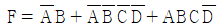
을 간략화 한 것은?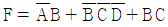
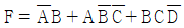
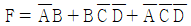
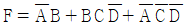
25. 200Hz의 주파수를 갖는 아날로그 신호의 주기는?
26. JK 플립플롭 2개의 입력이 똑같이 '1'이고, 클록 펄스가 계속 들어오면 출력은 어떤 상태가 되는가?
27. 심전도 기록지 속도가 40mm/s일 때 평균 R-R 간격이 20mm일 경우의 분당 심박수는 몇 회인가?
28. 그림에서 4개의 커패시터 C1, C2, C3, C4가 직병렬로 연결되어 있을 때, 합성 정전용량은 약 몇 ㎌인가? (단, C1 = 1㎌, C2 = 2㎌, C3 = 3㎌, C4 = 4㎌ 이다.)
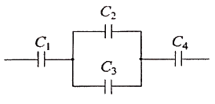
29. 펄스의 진폭과 폭은 일정하고 펄스의 반복주파수를 신호에 따라서 변화시키는 변조는?
30. PN 접합 다이오드에서 공핍층이 가장 넓어질 때는?
31. 마이크로프로세서의 중앙처리장치(CPU)의 성능을 평가하는 척도로 틀린 것은?
32. 폐용적의 측정방법으로 틀린 것은?
33. 다음 회로에서 다이오드 역할의 설명 중 옳은 것은?
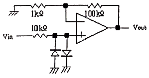
34. 투자율이 μ(H/m)이고 단면적은 S(m2)인 환상의 철심에 권수 N회로 솔레노이드를 감아서 전류 I(A)를 흘릴 경우, 평균 자로 길이는 ℓ(m)이라고 하면 철심을 흐르는 자속(Wb)은?
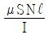
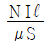
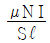
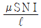
35. 라디오 같은 동조회로의 특수 분야에 사용되며 출력신호에 포함된 고조파를 제거하기 위해 동조 증폭기에 한정적으로 사용하는 증폭기는?
36. 두 가지 금속으로 폐회로를 형성하고 전류를 흘리면 접속점에 줄(Joule)열 이외의 발열 또는 흡열이 일어나는 현상은?
37. 트랜지스터 증폭 회로 중에서 입력저항이 높아서 주로 임피던스 변환용으로 사용되는 회로는?
38. 배전압 정류회로의 특징에 대한 설명 중 틀린 것은?
39. 아날로그-디지털(ADC) 신호 변환 과정에 속하지 않는 것은?
40. 압전 재료 중에서 가장 큰 압전효과를 가지며 우수한 진동 특성을 가지는 것은?
3과목: 의료안전·법규 및 정보
41. 다음 중 의료가스의 종류가 아닌 것은?
42. 전자의무기록(EMR)의 개념으로 틀린 것은?
43. 감지 전류에 대한 설명으로 옳은 것은?
44. 휴대용 의료용전기기기의 기계적 안전을 위한 낙하시험에서 기기의 중량별 낙하높이로 틀린 것은?
45. 향후 PACS의 발전방향과 거리가 먼 것은?
46. 다음 중 등전위 접지에 대한 설명으로 틀린 것은?
47. 의료기기의 용기나 외장에 필이 기재해야하는 것은?
48. 레이저와 인체 조직 간에 발생하는 상호작용의 유형이 아닌 것은?
49. 의료기기의 습열 멸균 공정에 대한 성과 적격성 검증 기준으로 틀린 것은?
50. 다음 중 의료기기감시원의 자격이 있는 자는?
51. 컴퓨터에서 사용하는 정보 양의 단위인 1메가바이트(MB)는 다음 중 어느 것과 동일한가?
52. 의료기기의 과온 및 기타 위해요인에 대한 보호에서 초과하는 온도에 도달하지 않아야 하는 최대 허용온도가 틀린 것은?
53. 의료용기기의 전기충격 보호정도에 따른 분류에 속하지 않는 것은?
54. 심장 정지를 일으킬 수 있는 심실 세동의 전류값은?
55. 의료기기법에서 정한 의료기기위원회의 역할(조사·심의)이 아닌 것은?
56. 이미 허가를 받은 의료기기와 구조·원리·성능·사용목적 및 사용방법 등이 본질적으로 동등한 의료기기의 경우에는 제출하지 않아도 되는 것은?
57. 원격의료의 장점으로서 거리가 먼 것은?
58. 보건복지부장관이 임명 또는 위촉하는 의료기기 위원회의 위원으로 구성될 수 있는 자격에 해당되지 않는 사람은?
59. 레이저와 조직 간에 발생하는 상호작용 중 함유된 에너지가 일반적으로 약 1~2mJ로 적은 양이지만 몇 나노 초(ns)동안 GW(giga watt)의 파워에 도달하는 높은 강도의 펄스를 이용하여 대상 조직을 이온화하는 것은?
60. 의학용어의 분류체계에서 '의학논문 주제어 분류체계'는 무엇인가?
4과목: 의료기기
61. 전기 자극 치료기에 있어 여러 가지 전기가 사용된다. 다음 중 직류전기와 같은 것으로 건전지나 축전지 등을 이용하여 일정한 전압을 유지하면서 전기를 일정한 방향으로 흘리는 것은?
62. 체열진단기의 특성으로 틀린 것은?
63. 전류 강도에 의해 전기 치료기를 분류할 수 있는데 이 중 저전류 치료기기에 해당되는 전기 강도는?
64. 제세동기에서 이중파형을 사용하는 가장 큰 이유로 옳은 것은?
65. 심근의 활동에 의해 발생되는 수 mV의 전위차를 피부표면 혹은 체내의 측정점에서 검출하는 측정법은?
66. 청력진단에서 유아나 지체부자유자와 같이 의사표시에 어려움이 있는 피검자를 대상으로 청각자극 인지 여부를 판별할 때 사용하기에 적당한 생체전기신호 그래프는?
67. X-선 진단장치의 특징이 아닌 것은?
68. 양성자 방출 단층 촬영(Positron Emission Tomograph : PET) 장치의 특징이 아닌 것은?
69. 환자감시장치의 심전도 신호 측정 시 기저선의 이동을 일으키는 주요 원인으로 틀린 것은?
70. 전기적 자극을 통해 근수축을 유발시켜 중추신경계 환자의 재활치료에 사용되는 치료기기 명칭은?
71. 감마카메라의 주요 구성이 아닌 것은?
72. 인공심장용 혈액펌프를 박동성유무로 분류 시 속하지 않은 것은?
73. 전기수술기에서 피부절개 기능은 그림 a와 같은 연속적인 펄스가 요구되며, 그림 b는 전기수술기에서 어떤 작업을 할 때 발생되는 펄스 파형인가?
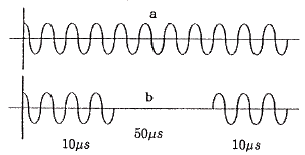
74. 혈압에 관한 설명으로 틀린 것은?
75. 인공심폐기의 구성 요소 중 저체온의 유도를 위해 사용되는 장치는?
76. 인공호흡기의 호흡조절방식 중 대상자의 환기노력에 일치시키는 동시에 공기를 전달하는 방식은?
77. 인공관절에 사용되는 생체재료가 아닌 것은?
78. 초음파를 이용한 뇌혈류진단기로 측정할 수 없는 생체 신호는?
79. 양자형 적외선 센서에 관한 설명 중 틀린 것은?
80. MRI에서 고주파 발신과 생체로부터의 MR신호를 수신하기 위한 코일은?
5과목: 의용기계공학
81. 보행과 주행의 차이점을 바르게 설명한 것은?
82. 건강한 성인의 혈액에 대한 설명으로 틀린 것은?
83. 물리적 에너지 중 직류 및 저주파 전류를 이용한 의공학 기술은?
84. 물체의 정적 평형(static equilibrium)에 관한 설명으로 틀린 것은?
85. 합성고무 중 가장 탄성이 좋고 질긴 특성이 있으며, 생체 적합성과 탄성이 우수하고 표면 변화가 가능하며 인공심장 재료로 활용되는 고분자 재료는?
86. 생체 조직 중 인체의 정상적인 활동 중에 최대변형(%)이 가장 작은 것은?
87. 점성계수의 단위 1P = 10-1N·(s/m2)일대 1cP는?
88. 80cm의 용수철에 200N의 하중이 작용하여 길이가 84cm가 되었다면 이때 변형률(ε)은?
89. 길이가 20.0mm 인 시편을 이용한 인장시험 결과는 28.8mm 지점에서 파단 되었다면 이 시편의 최종 길이 변화를 변위(Strain at brea; mm/mm)값으로 환산한 것은?
90. 체내에서 초음파에 의해 발생하는 캐비테이션 현상에 관한 설명 중 틀린 것은?
91. 나사의 리드(lead)에 대한 설명으로 옳은 것은?
92. 용존 산소 농도 차이에 의해서 일어날 수 있는 금속 생체재료의 분해형태는?
93. 생체재료 삽입에 의하여 손상된 상처조직 주위에서 일어나는 염증반응의 진행 순서를 옳게 나열한 것은?
94. 자전하는 양자가 강한 외부자기장에 노출되었을 때 그 외부자기장을 중심으로 일정한 각을 유지하며 회전하는 현상을 무엇이라 하는가?
95. 뛰어난 내식성, 생체친화성, 높은 내마모성과 높은 강도 등의 장점으로 인해 인공 고관절이나 치과용 임플란트 등의 광범위하게 임상에서 사용되는 재료는?
96. 생체재료로 사용하는 물질 중 탄성계수가 가장 작은 것은?
97. 다음 중 초음파의 전파속도가 가장 느린 것은?
98. 다음 중 보조기를 착용하는 목적으로 틀린 것은?
99. 생체 조직의 도전율의 설명으로 틀린 것은?
100. 상지보조기의 기능 및 목적과 거리가 먼 것은?